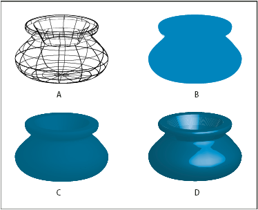

Surface shading options
- Surface
-
Lets you choose options for the shading surfaces:
- Wireframe
- Outlines the contours of the object’s geometry and make each surface transparent.
- No Shading
- Adds no new surface properties to the object. The 3D object has the same color as the original 2D object.
- Diffuse Shading
- Makes the object reflect light in a soft, diffuse pattern.
- Plastic Shading
-
Makes the object reflect light as if it were made of a shiny,
high-gloss material.
Note: Depending on what option you choose, different lighting options are available.If the object only uses the 3D Rotate effect, the only Surface choices available are Diffuse Shading or No Shading.
- Light Intensity
- Controls the light intensity between 0% and 100%.
- Ambient Light
- Controls the global lighting, which changes the brightness of all the object’s surfaces uniformly. Enter a value between 0% and 100%.
- Highlight Intensity
- Controls how much the object reflects light, with values ranging from 0% to 100%. Lower values produce a matte surface, and higher values create a shinier-looking surface.
- Highlight Size
- Controls the size of the highlight from large (100%) to small (0%).
- Blend Steps
- Controls how smoothly the shading appears across the object’s surfaces. Enter a value between 1 and 256. Higher numbers produce smoother shades and more paths than lower numbers.
- Draw Hidden Faces
-
Displays the object’s hidden backfaces. The backfaces are visible
if the object is transparent, or if the object is expanded and then
pulled apart.
Note: If your object has transparency and you want the hidden backfaces to display through the transparent front faces, apply the Object > Group command to the object before you apply the 3D effect.
- Preserve Spot Color (Extrude & Bevel effect and Revolve effect)
-
Lets you preserve spot colors in the object. Spot colors
can’t be preserved if you chose Custom for the Shading Color option.

Examples of different surface shading choices
- A.
- Wireframe
- B.
- No shading
- C.
- Diffuse shading
- D.
- Plastic shading